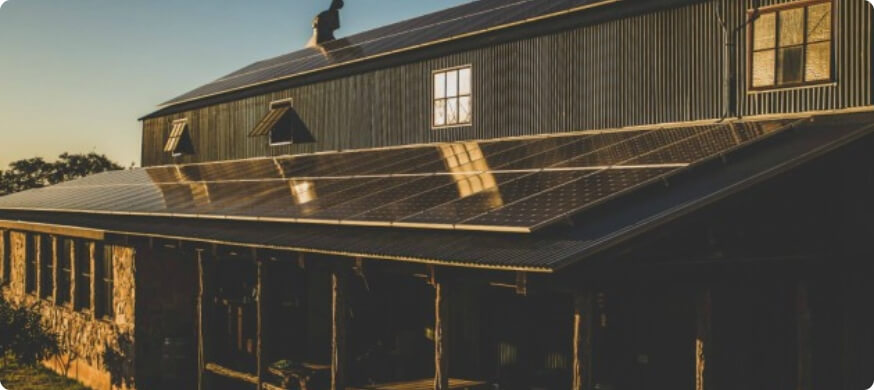
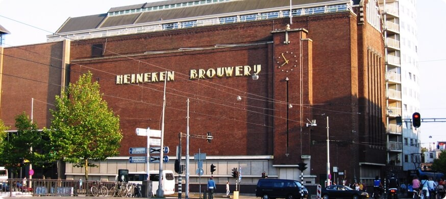

@@include('./partials/elements/button-link.htm', {
"text": "Back",
"href" : "javascript:history.back()",
"classes": "btn-back"
})
Reviews
History Partners (15)


Using Petainer’s one—way kegs has turned a logistical nightmare into a straightforward process, ensuring we can send our beers across the region at lower cost.
Brewery
Jester Brewery

We have partnered with Petainer because we recognize the growth opportunities for its products. One-way kegs provide a much more cost-effective alternative to steel kegs without any compromise on product quality and protection.

Brewery
Calsberg
We have partnered with Petainer because we recognize the growth opportunities for its products. One-way kegs provide a much more cost-effective alternative to steel kegs without any compromise on product quality and protection. We have partnered with Petainer because we recognize the growth opportunities for its products. One-way kegs provide a.


Brewery
Heineken

Using Petainer’s one—way kegs has turned a logistical nightmare into a straightforward process, ensuring we can send our beers across the region at lower cost.